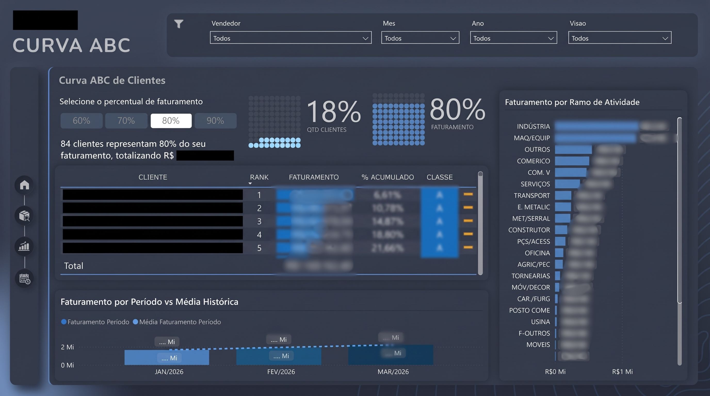

01 / 04
Power BI · DAX · Power Query
 Power BI
DAX
Power BI
DAX
 Power Query
Modelagem de Dados
Power Query
Modelagem de Dados
 Google Sheets
Google Sheets
Indicadores comerciais e operacionais em uma visão integrada
O projeto consolida informações de diferentes rotinas para acompanhar pedidos, prazos, produção e desempenho comercial. O modelo foi organizado no Power BI com páginas analíticas e indicadores orientados ao acompanhamento do negócio.
- Modelagem de dados e preparação das fontes com Power Query.
- Medidas e indicadores com DAX.
- Análise de pedidos, prazos, produção e indicadores comerciais.
- Curva ABC para apoiar a análise de concentração e priorização comercial.
5páginas analíticas
184medidas DAX
~40tabelas de negócio no modelo
Power BI
DAX
Power Query
Modelagem de Dados
Google Sheets